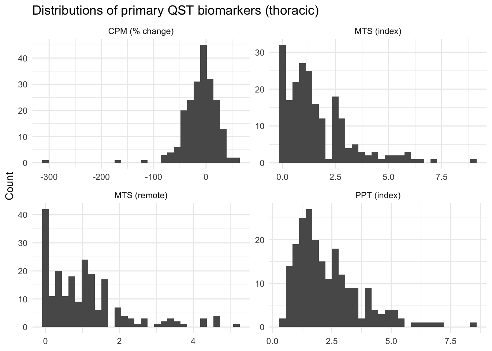

library(dplyr)
library(ggplot2)
library(readr)
library(tidyr)3 Quantitative Sensory Testing
Quantitative Sensory Testing (QST) is a set of standardized psychophysical assays that assess how pain is processed (for a methodological introduction, see McDaniel et al. (2023)). In the Acute to Chronic Pain Signatures Study (A2CPS), we use QST to characterize each participant’s pain-processing profile before surgery, on the hypothesis that these profiles help predict who goes on to develop chronic post-surgical pain.
McDaniel, A. L., Dimitrov, T. N., Bruehl, S. P., Monroe, T. B., Failla, M. D., Cowan, R. L., Ryan, C., & Anderson, A. R. (2023). Psychophysics of pain: A methodological introduction. Pain Management Nursing, 24(4), 442–451. https://doi.org/10.1016/j.pmn.2023.02.006
A2CPS collects three complementary QST assays (Berardi et al., 2022), and each one is tested at both a surgical index site (near where surgery will occur) and a remote site (a control location):
- Pressure Pain Threshold (PPT): the pressure at which a steadily increasing force first becomes painful, measured with an algometer over three repetitions per site. PPT is a measure of static pain sensitivity. Note that higher PPT means less pain sensitivity (more pressure was needed before the participant reached pain).
- Mechanical Temporal Summation (MTS): the increase in pain over a train of identical pokes delivered with a Neuropen. MTS captures pain facilitation, the tendency of the central nervous system to amplify repeated input. Higher MTS means greater facilitation.
- Conditioned Pain Modulation (CPM): the change in PPT after a conditioning cold-water hand immersion. CPM captures descending inhibition, the “pain inhibits pain” mechanism. Zero or positive CPM scores indicate no descending inhibition; negative scores indicate inhibition is present.
This kit builds on the thoracic cohort. The NIMH Data Archive (NDA) release carries the full set of QST trials for the thoracic cohort, so all three assays can be reconstructed from the raw per-repetition ratings. The thoracic table uses the HEAL Common Data Element names (Wandner et al., 2022) in lowercase (for example, tscompleted), so no renaming is needed here.
Wandner, L. D., Domenichiello, A. F., Beierlein, J., Pogorzala, L., Aquino, G., Siddons, A., Porter, L., Atkinson, J., & Institute, N. P. C. (2022). NIH’s helping to end addiction long-termSM initiative (NIH HEAL initiative) clinical pain management common data element program. The Journal of Pain, 23(3), 370–378. https://doi.org/10.1016/j.jpain.2021.08.005
For each assay, we compute a primary and a secondary biomarker, and for PPT and MTS these are reported at both the index and the remote site. The definitions follow the A2CPS Manual of Procedures:
| Assay | Primary biomarker | Secondary biomarker |
|---|---|---|
| PPT | Mean PPT at the index site | Mean PPT at the remote site |
| MTS | Mean of 3 difference scores (max minus initial) | Mean of 3 wind-up ratios, (max + 1)/(initial + 1) |
| CPM | % change: (pre minus post)/pre × 100 | Difference: pre minus post |
The trial-level fields that go into these formulas are described in the NDA data dictionary for heal_qst01.
3.1 Starting Project
3.1.1 Locate Data
We assume that the data were downloaded from the NIMH Data Archive (NDA) as a Data Package and saved to data/nda inside the project folder (Appendix C describes what a package contains). Each NDA data structure is a table, <structure>.txt, and any files that the structure references are underneath a folder of the same name, <structure>/. Paths in the text start from the folder that holds the structure’s files (for the MRI data, <structure>/corral-secure/projects/A2CPS/products/consortium-data/pre-surgery), while code chunks spell out the full path from the project folder.
QST is one NDA structure per cohort: heal_qst01 for the thoracic cohort and heal_qsttka01 for the TKA cohort. This kit uses the thoracic table:
data/nda/heal_qst01.txt3.1.2 Extract Data
The file is a tab-separated table. We define two helpers for the temporal-summation formulas so the scoring chunks read cleanly.
# temporal summation, per trial, from the start (initial) and end (final) pain ratings.
# the peak is the higher of the two, so a trial that ends lower than it started counts as no climb.
# how much pain climbed over the trial
ts_diff <- \(initial, final) {
peak <- pmax(initial, final)
peak - initial
}
# the same climb as a ratio; the +1 keeps it defined when the start rating is 0
ts_wur <- \(initial, final) {
peak <- pmax(initial, final)
(peak + 1) / (initial + 1)
}We read the file without its line of column descriptions, convert record_id to a number, and drop any exact duplicate rows so that a participant appears only once. We then derive the surgical cohort from record_id; every record here is thoracic.
qst_file <- "data/nda/heal_qst01.txt"
# line 2 of an NDA table describes each column, so take names from line 1 and data from line 3
qst_names <- names(read_tsv(qst_file, n_max = 0, show_col_types = FALSE))
qst <- read_tsv(qst_file, skip = 2, col_names = qst_names) |>
rename(record_id = src_subject_id) |>
mutate(record_id = as.numeric(record_id)) |>
distinct()NDA provides the individual trial ratings rather than the summary biomarkers, so we compute them here following the A2CPS Manual of Procedures. Every mean requires all of its trials, so a missing trial yields a missing biomarker. A completion flag records which sites were tested, coded 1 for both sites, 2 for remote only, and 3 for index only. So for MTS we compute the index biomarkers when tscompleted is 1 or 3, and the remote biomarkers when it is 1 or 2.
For MTS, each site has three Neuropen trials. The per-trial difference is max(final, initial) - initial, and the wind-up ratio is (max + 1)/(initial + 1). The primary biomarker is the mean of the three differences, the secondary the mean of the three wind-up ratios.
qst <- qst |>
mutate(
primary_ts_index = if_else(
tscompleted %in% c(1, 3),
(ts_diff(tsindxr1initial, tsindxr1final) +
ts_diff(tsindxr2initial, tsindxr2final) +
ts_diff(tsindxr3initial, tsindxr3final)) /
3,
NA_real_
),
secondary_ts_index = if_else(
tscompleted %in% c(1, 3),
(ts_wur(tsindxr1initial, tsindxr1final) +
ts_wur(tsindxr2initial, tsindxr2final) +
ts_wur(tsindxr3initial, tsindxr3final)) /
3,
NA_real_
),
primary_ts_remote = if_else(
tscompleted %in% c(1, 2),
(ts_diff(tsremoter1initial, tsremoter1final) +
ts_diff(tsremoter2initial, tsremoter2final) +
ts_diff(tsremoter3initial, tsremoter3final)) /
3,
NA_real_
),
secondary_ts_remote = if_else(
tscompleted %in% c(1, 2),
(ts_wur(tsremoter1initial, tsremoter1final) +
ts_wur(tsremoter2initial, tsremoter2final) +
ts_wur(tsremoter3initial, tsremoter3final)) /
3,
NA_real_
)
)For PPT, the primary biomarker is the mean of the three index trials and the secondary the mean of the three remote trials. pptcompleteyn uses the same coding as above, so the index biomarker is computed when it is 1 or 3 and the remote when it is 1 or 2. CPM compares the remote PPT before conditioning (the secondary PPT) with the PPT measured during cold-water immersion; the primary biomarker is the percent change and the secondary the raw difference.
qst <- qst |>
mutate(
# mean PPT at each site (all three trials required)
primary_ppt = if_else(
pptcompleteyn %in% c(1, 3),
(pptindxr1val + pptindxr2val + pptindxr3val) / 3,
NA_real_
),
secondary_ppt = if_else(
pptcompleteyn %in% c(1, 2),
(pptremoter1val + pptremoter2val + pptremoter3val) / 3,
NA_real_
)
) |>
mutate(
# CPM compares remote PPT before conditioning with PPT during cold-water immersion
ppt_cold = (cpmpptremr1val + cpmpptremr2val + cpmpptremr3val) / 3,
primary_cpm = if_else(
pptcompleteyn %in% c(1, 2),
(secondary_ppt - ppt_cold) / secondary_ppt * 100,
NA_real_
),
secondary_cpm = if_else(
pptcompleteyn %in% c(1, 2),
secondary_ppt - ppt_cold,
NA_real_
)
) |>
select(-ppt_cold)A look at the eight biomarker columns.
qst |>
select(
record_id,
primary_ppt,
secondary_ppt,
primary_ts_index,
secondary_ts_index,
primary_ts_remote,
secondary_ts_remote,
primary_cpm,
secondary_cpm
) |>
head()| record_id | primary_ppt | secondary_ppt | primary_ts_index | secondary_ts_index | primary_ts_remote | secondary_ts_remote | primary_cpm | secondary_cpm |
|---|---|---|---|---|---|---|---|---|
| 20051 | 1.8600000 | 1.7466667 | 1.3333333 | 1.666667 | 0.6666667 | 1.666667 | 17.36641 | 0.3033333 |
| 20056 | 3.0133333 | 5.2366667 | 0.3333333 | 1.333333 | 0.0000000 | 1.000000 | 16.99554 | 0.8900000 |
| 20057 | 0.7566667 | 1.3566667 | 1.0000000 | 1.500000 | 0.3333333 | 1.333333 | 20.39312 | 0.2766667 |
| 20058 | 2.0933333 | 2.9966667 | 0.8333333 | 1.777778 | 0.6666667 | 1.666667 | -54.61624 | -1.6366667 |
| 20059 | 0.7100000 | 0.5933333 | 3.6666667 | 2.666667 | 2.3333333 | 2.638889 | 26.96629 | 0.1600000 |
| 20061 | 0.8833333 | 0.7300000 | 0.6666667 | 1.666667 | 0.6666667 | 1.666667 | 21.00457 | 0.1533333 |
Check that the biomarkers are stored as numbers.
qst |>
select(record_id, starts_with("primary_"), starts_with("secondary_")) |>
glimpse()Rows: 215
Columns: 9
$ record_id <dbl> 20051, 20056, 20057, 20058, 20059, 20061, 20062, 2…
$ primary_ts_index <dbl> 1.3333333, 0.3333333, 1.0000000, 0.8333333, 3.6666…
$ primary_ts_remote <dbl> 0.6666667, 0.0000000, 0.3333333, 0.6666667, 2.3333…
$ primary_ppt <dbl> 1.8600000, 3.0133333, 0.7566667, 2.0933333, 0.7100…
$ primary_cpm <dbl> 17.366412, 16.995544, 20.393120, -54.616240, 26.96…
$ secondary_ts_index <dbl> 1.666667, 1.333333, 1.500000, 1.777778, 2.666667, …
$ secondary_ts_remote <dbl> 1.666667, 1.000000, 1.333333, 1.666667, 2.638889, …
$ secondary_ppt <dbl> 1.7466667, 5.2366667, 1.3566667, 2.9966667, 0.5933…
$ secondary_cpm <dbl> 0.30333333, 0.89000000, 0.27666667, -1.63666667, 0…3.1.3 Data Quality
A few things are worth knowing before we start:
- Biomarkers need complete trial data. Each mean is computed only when all of its trials are present, so expect a modest number of missing biomarker values even among completed assessments.
- CPM percent change can be extreme. Dividing by the pre-immersion PPT means a small baseline can blow up the percentage, while the secondary CPM (a simple difference) stays bounded by the pressure scale. We tally the biomarker coverage first.
qst |>
summarise(across(
c(primary_ppt, primary_ts_index, primary_ts_remote, primary_cpm),
\(x) sum(!is.na(x))
))| primary_ppt | primary_ts_index | primary_ts_remote | primary_cpm |
|---|---|---|---|
| 215 | 213 | 212 | 209 |
3.2 Exploratory data analysis
The three assays are meant to capture different pain-processing mechanisms: static sensitivity (PPT), facilitation (MTS), and inhibition (CPM). We reshape the primary biomarkers into a long format and plot their distributions. Note the different scales: PPT and MTS are on a pressure or pain scale, while CPM percent change is unbounded and heavy-tailed.
primary <- qst |>
select(
record_id,
`PPT (index)` = primary_ppt,
`MTS (index)` = primary_ts_index,
`MTS (remote)` = primary_ts_remote,
`CPM (% change)` = primary_cpm
)
primary |>
pivot_longer(-record_id, names_to = "biomarker", values_to = "value") |>
filter(!is.na(value)) |>
ggplot(aes(value)) +
geom_histogram(bins = 30) +
facet_wrap(~biomarker, scales = "free") +
labs(
title = "Distributions of primary QST biomarkers (thoracic)",
x = NULL,
y = "Count"
) +
theme_minimal()
The CPM panel makes the heavy tail from the percent change easy to see. Next we look at how the biomarkers relate to one another using a spearman (rank-based) correlation on pairwise-complete observations.
primary |>
select(-record_id) |>
cor(method = "spearman", use = "pairwise.complete.obs") |>
round(2) PPT (index) MTS (index) MTS (remote) CPM (% change)
PPT (index) 1.00 -0.23 -0.20 -0.17
MTS (index) -0.23 1.00 0.75 0.02
MTS (remote) -0.20 0.75 1.00 -0.01
CPM (% change) -0.17 0.02 -0.01 1.00The pattern is informative. The two MTS sites are strongly correlated (around 0.75), so a participant who summates at the index site tends to also summate at the remote site. Otherwise PPT, MTS, and CPM are close to independent. The assays are not redundant: each biomarker adds its own information about a participant’s pain-processing profile, which is exactly why A2CPS collects all three rather than a single summary of pain sensitivity.
3.3 Considerations While Working on the Project
3.3.1 Data Generation
QST is administered in person by trained study staff, following the A2CPS Manual of Procedures, which specifies the algometer and Neuropen procedures, the cold-water CPM protocol, and the index and remote testing locations. NDA stores the raw per-trial ratings, so the PPT, MTS, and CPM biomarkers are computed from those trials as shown above. The checks that A2CPS runs on the QST case report forms are described in QST CRF Data Quality Checks.
3.3.2 Other
- Directionality matters. Higher PPT means less sensitivity, higher MTS means more facilitation, and negative CPM points to inhibition. A flipped sign quietly reverses a result, so the table above is a handy reference.
- MTS and the wind-up ratio are non-negative by construction. The difference and wind-up scores use
max(final, initial)in place of the recorded maximum, so they never fall below 0 (difference) or 1 (wind-up ratio). - Extra assay. The thoracic cohort also includes a Dynamic Mechanical Allodynia assessment, which is not part of the three biomarkers above but is available in the same table (the
dma*columns).
3.3.3 Citations
In publications or presentations including data from A2CPS, please include the following statement as attribution:
Data were provided (in part) by the A2CPS Consortium funded by the National Institutes of Health (NIH) Common Fund, which is managed by the Office of the Director (OD)/Office of Strategic Coordination (OSC). Consortium components and their associated funding sources include Clinical Coordinating Center (U24NS112873), Data Integration and Resource Center (U54DA049110), Omics Data Generation Centers (U54DA049116, U54DA049115, U54DA049113), Multi-site Clinical Center 1 (MCC1) (UM1NS112874), and Multi-site Clinical Center 2 (MCC2) (UM1NS118922).
Note
Berardi, G., Frey-Law, L., Sluka, K. A., Bayman, E. O., Coffey, C. S., Ecklund, D., Vance, C. G. T., Dailey, D. L., Burns, J., Buvanendran, A., McCarthy, R. J., Jacobs, J., Zhou, X. J., Wixson, R., Balach, T., Brummett, C. M., Clauw, D., Colquhoun, D., Harte, S. E., … Wandner, L. D. (2022). Multi-site observational study to assess biomarkers for susceptibility or resilience to chronic pain: The acute to chronic pain signatures (A2CPS) study protocol. Frontiers in Medicine, 9. https://doi.org/10.3389/fmed.2022.849214
Sluka, K. A., Wager, T. D., Sutherland, S. P., Labosky, P. A., Balach, T., Bayman, E. O., Berardi, G., Brummett, C. M., Burns, J., Buvanendran, A., et al. (2023). Predicting chronic postsurgical pain: Current evidence and a novel program to develop predictive biomarker signatures. Pain, 164(9), 1912–1926. https://doi.org/10.1097/j.pain.0000000000002938